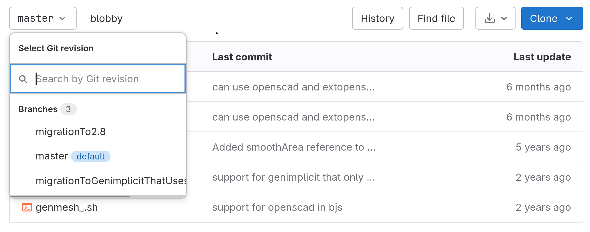

Противопопугайный сайт
Never Parrot
Если кто-то пропустил, то
Blobby
теперь есть для Blender не только ветки 2.79, но и 2.8. В репозитарии появилась новая ветка.
In case someone missed it
Blobby
is now compatible not only with Blender branch 2.79 but also 2.8. Look for the new branch in repository.

↑